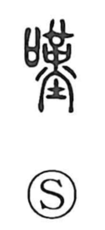

歎

Kun: nageku, nagekawashii | On: tan
to sigh ・ to lament ・ to grieve
Explanation
Shirakawa sees this as a phono-semantic character whose original form was 嘆. The phonetic element is 莫, which he interprets as a shaman with crossed hands, bearing a ritual sai vessel on the head; in times of crop failure or famine such a figure was burned while prayers were chanted to petition the gods—a solemn act of appeal and complaint. From these rites of chanting and imploring came the senses of lament and sigh. The component 欠 depicts a person in profile with an open mouth, capturing the posture of lamentation and reinforcing the meaning. Thus 歎 and 嘆 share the same reading and sense: to sigh, to lament, to grieve.